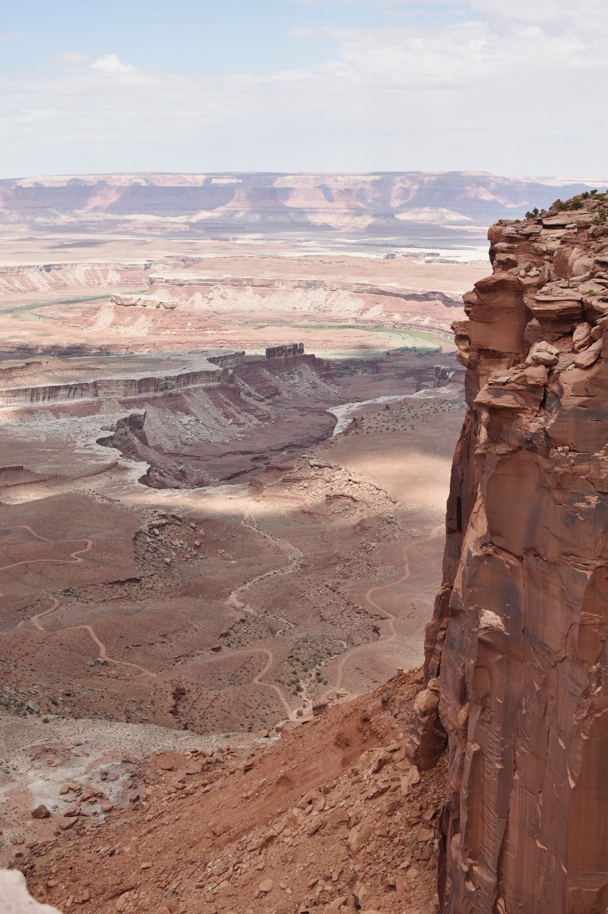
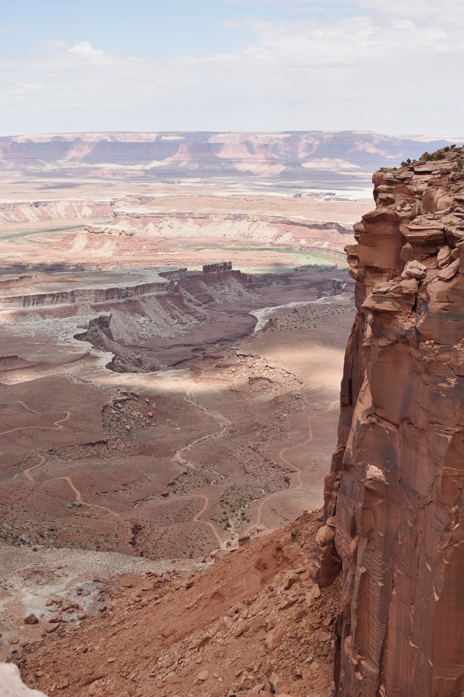

The National Park System dates back to the 1800’s. Since, government protections have been put in place to ensure the opportunity for Americans and visitors to enjoy the diverse landscapes present in the US.
Interact with the timeline to learn more about each of the protections enacted to protect public land.
 



To learn more about the evolution of the National Park System, visit their website.